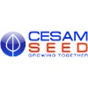

Administrateur systèmes & réseaux, en route vers la cybersécurité.
 Permis B
Permis B
Je m'appelle Alexandre Kiefer. En alternance chez CESAM SEED, j'ai administré un environnement VMware de 2 hôtes et une quinzaine de VM, et participé à la modernisation de l'infrastructure, de l'audit à la sauvegarde 3-2-1. Je recherche une alternance de 24 mois pour le Mastère Expert Cybersécurité.
Projets sélectionnés
02 / 2024 — 2026Modernisation de l'infrastructure CESAM SEED
Partant d'un audit interne, j'ai participé à la conception et au déploiement d'une infrastructure plus fiable, segmentée et sécurisée : virtualisation centralisée, VLANs, accès distant par VPN, HTTPS et sauvegardes testées. Projet présenté à l'examen.
Aegis Infra Lab
L'infrastructure d'une PME fictive montée de bout en bout : Active Directory, DNS/DHCP, pare-feu OPNsense, serveur web Debian et supervision Zabbix. Documenté sur GitHub.
Voir le projet →Borealis Linux Lab
Administration et durcissement Linux sur Debian : utilisateurs et droits, SSH par clé, pare-feu UFW, journaux et scripts Bash planifiés. Ansible et Docker à venir.
Voir le projet →Prochains labs · 2026 — 2027
Nimbus Cloud Lab
Azure, Entra ID, RBAC, VNet.
Argus Detection Lab
Wazuh, Sysmon, Suricata, analyse de logs.
ATLAS Enterprise Lab
Synthèse sur un hôte Proxmox : segmentation, sauvegardes 3-2-1, scénarios d'attaque et de détection.
À propos
03 / ParcoursUn an et demi d'alternance sur une infrastructure réelle, puis des labs personnels pour aller plus loin. J'aime comprendre une panne jusqu'au bout, et documenter chaque configuration pour qu'elle reste reproductible.
- Rythme
- 3 sem. entreprise / 1 sem. école
- Durée
- Alternance de 24 mois
- Diplôme actuel
- Bachelor AIS · Bac+3
- Mobilité
- Île-de-France · Permis B
- Expérience
- Juil. 2024 — nov. 2025Alternance

Administrateur systèmes, réseaux & cybersécuritéCESAM SEED, Paris · VMware, sauvegardes, VLAN, VPN, supervision - Nov. 2023 — avr. 2024StageTechnicien informatiqueKertios, Suresnes · inventaire, cartographie SI (ISO 9001), incidents réseau
- Formation
- ObjectifMastère Expert Cybersécurité24 mois en alternance · Bac+5Recherche alternance
- 2024 — 2025Bac+3Bachelor Administrateur d'Infrastructures SécuriséesLiveCampus · niveau 6 · en alternance
- 2023 — 2024Titre professionnel Technicien informatiqueOpenClassrooms · niveau 5Bac+2
Certifications & formations
- Cisco · Network Technician Career PathValidé
- Cisco · Junior Cybersecurity Analyst Career PathCisco
- Fortinet · Cybersecurity & Cloud FundamentalsValidé
- Fortinet · Introduction to the NGFWValidé
- AWS · Cloud Security FoundationsValidé
- Microsoft Learn · Active Directory Domain ServicesBadge
- Microsoft AZ-900 · SC-900Prévu
- Cisco CCNA · Linux Essentials / LPICPrévu
Compétences
04 / StackSystèmes & identité
- Windows Server 2022
- Windows 10 / 11
- Debian · Ubuntu
- AD DS · GPO
Réseaux
- TCP/IP · DNS · DHCP
- VLAN · ACL · routage
- Cisco · Wi-Fi
- phpIPAM
Sécurité
- OPNsense · pfSense
- OpenVPN
- SSL / TLS · NGINX
- Durcissement SSH · UFW
Virtualisation
- VMware ESXi · vCenter
- Proxmox VE
- VirtualBox
- Docker
Supervision
- Zabbix
- Grafana
- journald · logs
Sauvegarde & PRA
- Synology Active Backup
- Hyper Backup
- Stratégie 3-2-1 · RTO / RPO
Automatisation
- PowerShell
- Bash · cron
- Git
Méthode
- Audit & inventaire
- Cartographie SI
- Documentation technique
Travaillons ensemble.
Vous cherchez un alternant en systèmes, réseaux et cybersécurité ? Écrivez-moi, je vous réponds rapidement.
kiefer.alexandre1@gmail.com- Alternance 24 mois · 3 semaines entreprise / 1 semaine école
- Mastère Expert Cybersécurité
- Disponible immédiatement · Île-de-France